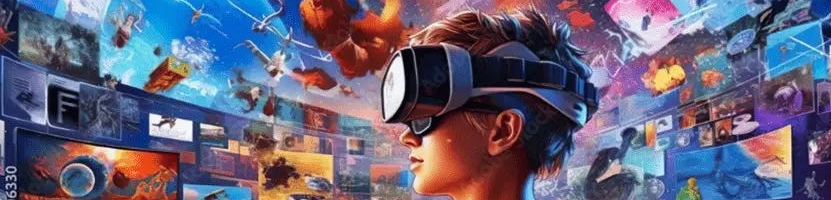

Videos-1
Halloween
Loy Krathong
Valentine's Day
Videos-2
Biodiversity
Crime
AI
Fitness
Natural Disasters
Vocabulary
Animals
Halloween
Valentine's Day
Other
Wheel of names
Word Wall
Quick Draw
0%

Correct:
0
Wrong:
0
Time:
0
Whole video
Video parts
QR code
Part 1
Part 2
Score:
number
points
Play again
First part
Up